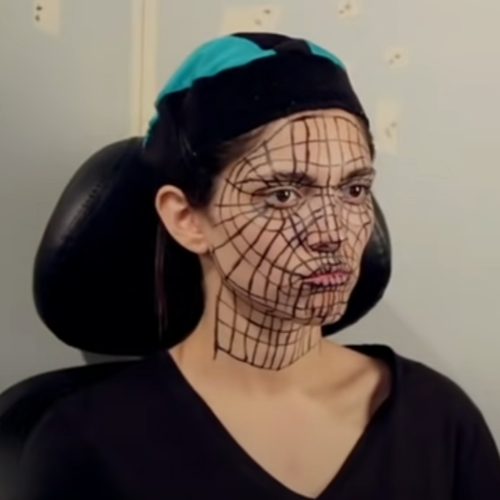
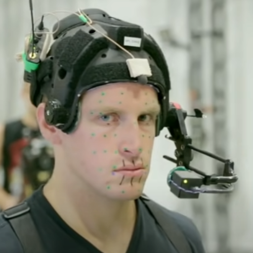
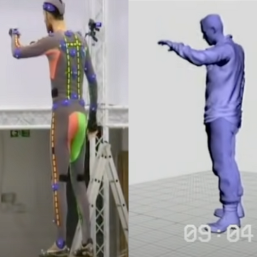
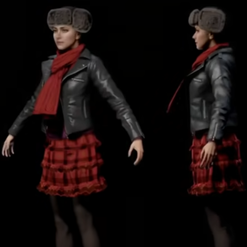

Development
Motion Capturing
To create an accurate model of the actor, the production team must record the topography of the actor's face. Lines are drawn onto the face and the actor performs different facial expressions. This allows for detailed emotions and makes the process of motion capture as a whole smoother.
Marker points are drawn on the actor's faces throughout the rest of the motion capturing process. The dots are captured by a high definition helmet camera. The helmet has two different microphones that capture the actor's audio.
Reflecting beads suits and an infrared camera matrix system are used to capture to motion of actors. Their actions are directed and performed in a large studio and includes different levels of platforms to simulate different movements. Because the set that they are performing in is not designed, it takes a lot of skill to play the part.
Each character has custom animated clothing that relates to their individual personalities.